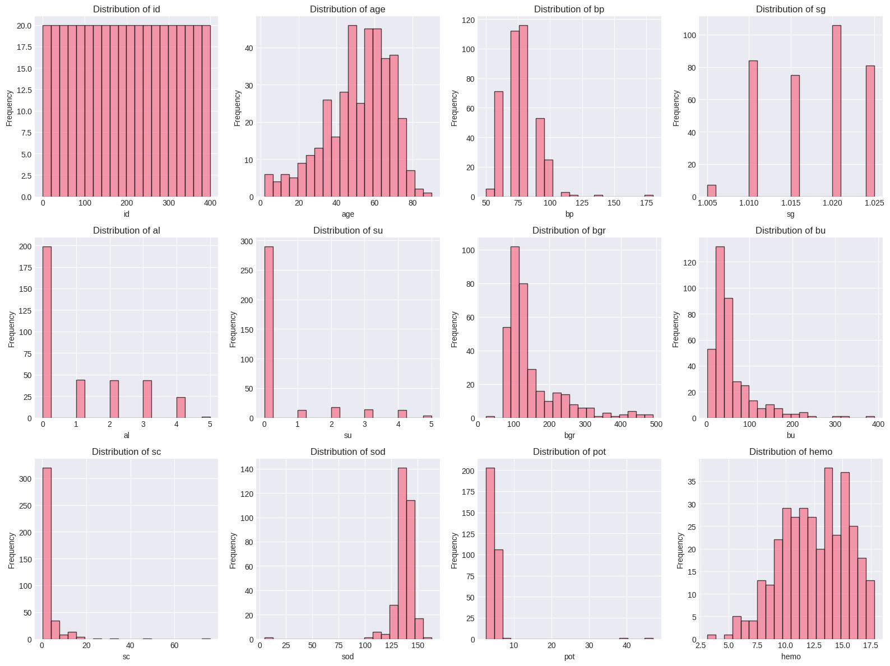
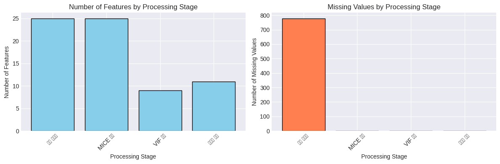
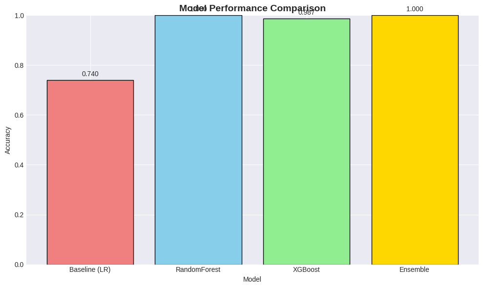
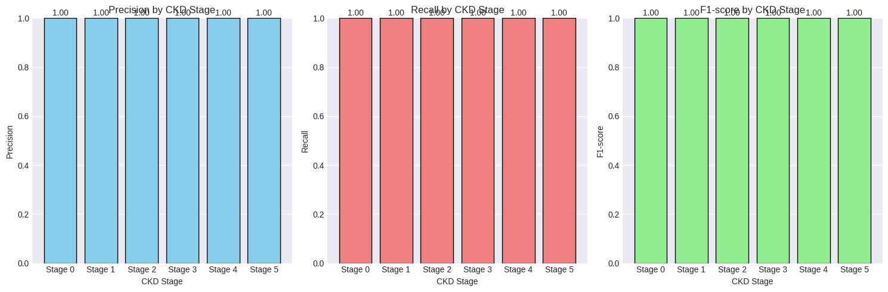
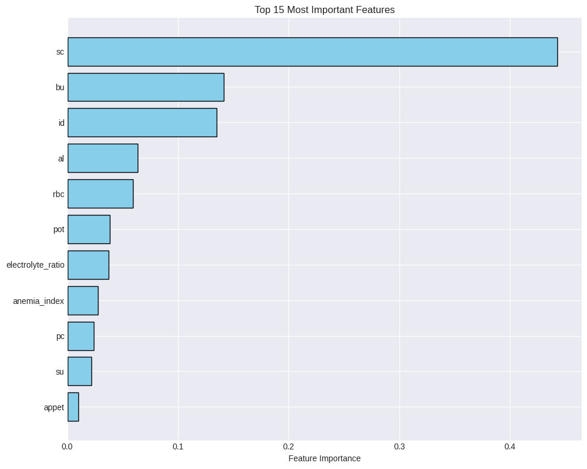
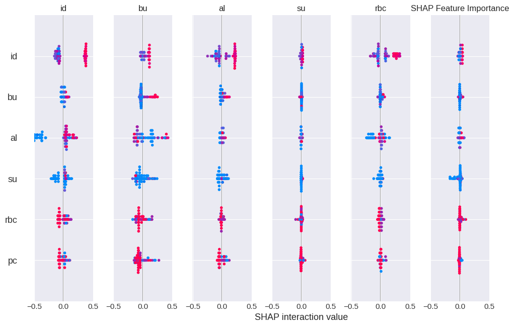

본 워크북은 만성 신장 질환(CKD) 환자의 검사 수치를 활용하여 질환 진행 단계를 분류하는 머신러닝 모델을 구축합니다. 이론적 기반과 실무 문제 해결 능력을 동시에 강화할 수 있도록 설계되었습니다. 분석가는 불균형 데이터 처리와 다중 클래스 분류 성능 최적화를 고려해야 합니다.
진행률:0% (분석 시작) 🔄 활용도: 상위권 대학 학부 4학년
2 🧬 L2-1 만성 신장 질환 진행 단계 분류
2.1 🧭 학습 목표 (Learning Outcomes)
이 워크북을 통해 학습자는 다음을 실습하게 됩니다: - 의료 데이터의 결측치를 MICE 기법으로 처리하고 VIF를 통한 다중공선성 제거 - 불균형 다중 클래스 분류 문제를 SMOTE로 해결하는 방법 습득 - Baseline 모델부터 앙상블까지 점진적 성능 개선 과정 체험
2.2 🧩 실습 개요
데이터: UCI Chronic Kidney Disease Dataset
목표: CKD 환자의 5단계 진행 상태 분류 (Stage 1-5)
사용 기술: pandas, scikit-learn, imbalanced-learn, SHAP
제약 조건:
MICE를 활용한 결측치 대체 필수
SMOTE를 통한 클래스 불균형 처리 필수
2.3 🔄 전체 실습 흐름
단계
주요 작업 내용
주요 도구/스킬
결과물
1단계
데이터 로드 및 탐색
pandas, matplotlib
EDA 보고서
2단계
전처리
MICE, VIF, StandardScaler
정제된 데이터셋
3단계
모델링
LogisticRegression, RandomForest, XGBoost
학습된 모델
4단계
성능 평가
confusion_matrix, classification_report
성능 메트릭
5단계
모델 해석
SHAP, feature_importance
해석 가능한 인사이트
6단계
외부 검증
cross_validation
일반화 성능
7단계
결과 리포트
matplotlib, seaborn
최종 보고서
2.4 📝 사전 필요 지식
이 워크북은 다음 기술/개념을 선행 학습한 학습자를 대상으로 합니다: - Python 기초 문법 및 pandas DataFrame 조작 - 기본적인 머신러닝 개념 (분류, 과적합, 교차검증) - 의료 데이터의 특성과 CKD 기본 지식
Downloading from https://www.kaggle.com/api/v1/datasets/download/mansoordaku/ckdisease?dataset_version_number=1...
Extracting files...
Path to dataset files: /root/.cache/kagglehub/datasets/mansoordaku/ckdisease/versions/1
Code
import osimport pandas as pdpath ="/root/.cache/kagglehub/datasets/mansoordaku/ckdisease/versions/1"# 1) 폴더 안 파일 확인print("📁 폴더 내 파일 목록:")print(os.listdir(path))# 2) CSV 파일 경로 설정 (파일 이름이 kidney_disease.csv 라고 가정)csv_path = os.path.join(path, "kidney_disease.csv") # os.listdir 결과 보고 이름 다르면 여기만 바꾸면 됨# 3) 데이터 로드df = pd.read_csv(csv_path)print("\n✅ 데이터를 성공적으로 로드했습니다.")print(f"📊 데이터셋 크기: {df.shape}")print(f"- 샘플 수: {df.shape[0]}")print(f"- 특징 수: {df.shape[1]}")# 데이터 첫 5행 확인print("\n🔍 데이터 미리보기:")df.head()
📁 폴더 내 파일 목록:
['kidney_disease.csv']
✅ 데이터를 성공적으로 로드했습니다.
📊 데이터셋 크기: (400, 26)
- 샘플 수: 400
- 특징 수: 26
🔍 데이터 미리보기:
id
age
bp
sg
al
su
rbc
pc
pcc
ba
...
pcv
wc
rc
htn
dm
cad
appet
pe
ane
classification
0
0
48.0
80.0
1.020
1.0
0.0
NaN
normal
notpresent
notpresent
...
44
7800
5.2
yes
yes
no
good
no
no
ckd
1
1
7.0
50.0
1.020
4.0
0.0
NaN
normal
notpresent
notpresent
...
38
6000
NaN
no
no
no
good
no
no
ckd
2
2
62.0
80.0
1.010
2.0
3.0
normal
normal
notpresent
notpresent
...
31
7500
NaN
no
yes
no
poor
no
yes
ckd
3
3
48.0
70.0
1.005
4.0
0.0
normal
abnormal
present
notpresent
...
32
6700
3.9
yes
no
no
poor
yes
yes
ckd
4
4
51.0
80.0
1.010
2.0
0.0
normal
normal
notpresent
notpresent
...
35
7300
4.6
no
no
no
good
no
no
ckd
5 rows × 26 columns
Code
# 데이터 타입 및 결측치 확인print("\n📋 데이터 정보:")df.info()# 결측치 비율 계산missing_ratio = (df.isnull().sum() /len(df) *100).sort_values(ascending=False)print("\n📊 결측치 비율 (%):")print(missing_ratio[missing_ratio >0])
📋 데이터 정보:
<class 'pandas.core.frame.DataFrame'>
RangeIndex: 400 entries, 0 to 399
Data columns (total 26 columns):
# Column Non-Null Count Dtype
--- ------ -------------- -----
0 id 400 non-null int64
1 age 391 non-null float64
2 bp 388 non-null float64
3 sg 353 non-null float64
4 al 354 non-null float64
5 su 351 non-null float64
6 rbc 248 non-null object
7 pc 335 non-null object
8 pcc 396 non-null object
9 ba 396 non-null object
10 bgr 356 non-null float64
11 bu 381 non-null float64
12 sc 383 non-null float64
13 sod 313 non-null float64
14 pot 312 non-null float64
15 hemo 348 non-null float64
16 pcv 330 non-null object
17 wc 295 non-null object
18 rc 270 non-null object
19 htn 398 non-null object
20 dm 398 non-null object
21 cad 398 non-null object
22 appet 399 non-null object
23 pe 399 non-null object
24 ane 399 non-null object
25 classification 400 non-null object
dtypes: float64(11), int64(1), object(14)
memory usage: 81.4+ KB
📊 결측치 비율 (%):
rbc 38.00
rc 32.50
wc 26.25
pot 22.00
sod 21.75
pcv 17.50
pc 16.25
hemo 13.00
su 12.25
sg 11.75
al 11.50
bgr 11.00
bu 4.75
sc 4.25
bp 3.00
age 2.25
pcc 1.00
ba 1.00
dm 0.50
htn 0.50
cad 0.50
appet 0.25
ane 0.25
pe 0.25
dtype: float64
Code
# 타겟 변수 확인 및 Stage 변환print("\n🎯 타겟 변수 분포:")print(df['classification'].value_counts())# CKD Stage 생성 (크레아티닌 수치 기반)def assign_ckd_stage(row):"""크레아티닌 수치를 기반으로 CKD Stage 할당"""if pd.isna(row['sc']):return np.nan sc_value =float(row['sc']) ifisinstance(row['sc'], str) else row['sc']if row['classification'] =='notckd':return0# No CKDelif sc_value <1.5:return1# Stage 1elif sc_value <2.0:return2# Stage 2elif sc_value <3.0:return3# Stage 3elif sc_value <5.0:return4# Stage 4else:return5# Stage 5# Stage 컬럼 생성df['ckd_stage'] = df.apply(assign_ckd_stage, axis=1)print("\n📊 CKD Stage 분포:")stage_counts = df['ckd_stage'].value_counts().sort_index()print(stage_counts)# 시각화plt.figure(figsize=(10, 5))plt.subplot(1, 2, 1)stage_counts.plot(kind='bar', color='skyblue', edgecolor='black')plt.title('CKD Stage Distribution')plt.xlabel('CKD Stage (0=No CKD, 1-5=Stage 1-5)')plt.ylabel('Count')plt.xticks(rotation=0)plt.subplot(1, 2, 2)stage_counts.plot(kind='pie', autopct='%1.1f%%', colors=sns.color_palette('coolwarm', len(stage_counts)))plt.title('CKD Stage Proportion')plt.ylabel('')plt.tight_layout()plt.show()print("\n⚠️ 클래스 불균형 확인: Stage별 샘플 수가 크게 차이납니다.")
🔍 학습 포인트 #1
CKD Stage 분류에서 크레아티닌(sc) 수치는 핵심 지표입니다. 의학적으로 Stage 1-5는 신장 기능 저하 정도를 나타내며, 높은 Stage일수록 신장 기능이 심각하게 손상되었음을 의미합니다.
Code
# 수치형 변수 분포 확인numeric_cols = df.select_dtypes(include=[np.number]).columns.tolist()if'ckd_stage'in numeric_cols: numeric_cols.remove('ckd_stage')print(f"📊 수치형 변수 ({len(numeric_cols)}개): {numeric_cols[:5]}...")# 주요 수치형 변수 분포 시각화fig, axes = plt.subplots(3, 4, figsize=(16, 12))axes = axes.ravel()for idx, col inenumerate(numeric_cols[:12]): axes[idx].hist(df[col].dropna(), bins=20, edgecolor='black', alpha=0.7) axes[idx].set_title(f'Distribution of {col}') axes[idx].set_xlabel(col) axes[idx].set_ylabel('Frequency')plt.tight_layout()plt.show()
📊 수치형 변수 (12개): ['id', 'age', 'bp', 'sg', 'al']...

2.8 2️⃣ 데이터 전처리
2.8.1 2.1 기본 전처리
Code
# 데이터 복사본 생성df_processed = df.copy()# 문자열 타입의 수치형 데이터 변환potential_numeric = ['age', 'bp', 'bgr', 'bu', 'sc', 'sod', 'pot', 'hemo', 'pcv', 'wc', 'rc']for col in potential_numeric:if col in df_processed.columns:# '\t?' 같은 특수 문자 제거 df_processed[col] = df_processed[col].replace(['\t?', '\t'], np.nan)# 수치형으로 변환 df_processed[col] = pd.to_numeric(df_processed[col], errors='coerce')print("✅ 수치형 데이터 변환 완료")# 범주형 변수 처리categorical_cols = df_processed.select_dtypes(include=['object']).columns.tolist()if'classification'in categorical_cols: categorical_cols.remove('classification')print(f"\n📋 범주형 변수 ({len(categorical_cols)}개): {categorical_cols}")# 범주형 변수 인코딩label_encoders = {}for col in categorical_cols: le = LabelEncoder()# NaN 값을 'missing'으로 임시 대체 df_processed[col] = df_processed[col].fillna('missing') df_processed[col] = le.fit_transform(df_processed[col].astype(str)) label_encoders[col] = leprint("✅ 범주형 변수 인코딩 완료")
✅ 수치형 데이터 변환 완료
📋 범주형 변수 (10개): ['rbc', 'pc', 'pcc', 'ba', 'htn', 'dm', 'cad', 'appet', 'pe', 'ane']
✅ 범주형 변수 인코딩 완료
🔍 학습 포인트 #2
의료 데이터는 종종 특수 문자나 잘못된 형식을 포함합니다. 기본 전처리에서 이러한 이상값을 먼저 처리한 후, 고급 기법을 적용해야 합니다.
2.8.2 2.2 고급 전처리 기법 적용
Code
# MICE를 이용한 결측치 대체print("🔄 MICE (Multiple Imputation by Chained Equations) 적용 중...")# 타겟 변수 분리X = df_processed.drop(['classification', 'ckd_stage'], axis=1)y = df_processed['ckd_stage'].dropna()# MICE imputer 생성 및 적용mice_imputer = IterativeImputer(random_state=42, max_iter=10)X_imputed = mice_imputer.fit_transform(X)X_imputed_df = pd.DataFrame(X_imputed, columns=X.columns)print("✅ MICE 결측치 대체 완료")print(f"결측치 개수: {X.isnull().sum().sum()} → {pd.DataFrame(X_imputed).isnull().sum().sum()}")# 타겟 변수가 있는 행만 선택valid_indices = df_processed['ckd_stage'].notna()X_imputed_df = X_imputed_df[valid_indices]y = y.reset_index(drop=True)print(f"\n📊 최종 데이터 크기: {X_imputed_df.shape}")
🔄 MICE (Multiple Imputation by Chained Equations) 적용 중...
✅ MICE 결측치 대체 완료
결측치 개수: 778 → 0
📊 최종 데이터 크기: (383, 25)
Code
# VIF를 이용한 다중공선성 제거from statsmodels.stats.outliers_influence import variance_inflation_factordef calculate_vif(df):"""VIF 계산 함수""" vif = pd.DataFrame() vif["Variable"] = df.columns vif["VIF"] = [variance_inflation_factor(df.values, i) for i inrange(df.shape[1])]return vif.sort_values('VIF', ascending=False)print("📊 VIF (Variance Inflation Factor) 계산 중...")# 초기 VIF 계산vif_df = calculate_vif(X_imputed_df)print("\n초기 VIF 값 (상위 10개):")print(vif_df.head(10))# VIF > 10인 변수 제거 (다중공선성 높음)high_vif_cols = vif_df[vif_df['VIF'] >10]['Variable'].tolist()X_reduced = X_imputed_df.drop(columns=high_vif_cols, errors='ignore')print(f"\n✅ 제거된 변수 ({len(high_vif_cols)}개): {high_vif_cols}")print(f"남은 변수 개수: {X_reduced.shape[1]}")# 최종 VIF 확인if X_reduced.shape[1] >0: final_vif = calculate_vif(X_reduced)print("\n최종 VIF 값 (상위 5개):")print(final_vif.head())
📊 VIF (Variance Inflation Factor) 계산 중...
초기 VIF 값 (상위 10개):
Variable VIF
3 sg 1045.999222
13 sod 590.513094
15 hemo 150.244372
16 pcv 139.041430
18 rc 99.995871
20 dm 62.951863
21 cad 55.976170
2 bp 40.556123
9 ba 23.228386
19 htn 20.643892
✅ 제거된 변수 (16개): ['sg', 'sod', 'hemo', 'pcv', 'rc', 'dm', 'cad', 'bp', 'ba', 'htn', 'pcc', 'ane', 'pe', 'bgr', 'wc', 'age']
남은 변수 개수: 9
최종 VIF 값 (상위 5개):
Variable VIF
3 rbc 7.117093
0 id 6.240759
4 pc 4.773075
5 bu 4.702755
7 pot 4.020483
🔍 학습 포인트 #3
MICE는 단순 평균 대체보다 우수한 이유는 변수 간 관계를 고려하여 결측치를 예측하기 때문입니다. VIF > 10인 변수는 다중공선성이 높아 모델 성능과 해석력을 저하시킬 수 있습니다.
2.8.3 2.3 도메인 특화 전처리
Code
# 의료 도메인 지식 기반 특징 생성X_domain = X_reduced.copy()# 1. eGFR (추정 사구체 여과율) - 신장 기능 핵심 지표if'age'in X_domain.columns and'sc'in X_imputed_df.columns:# MDRD 공식 간소화 버전 X_domain['eGFR'] =186* (X_imputed_df['sc'] **-1.154) * (X_domain['age'] **-0.203)print("✅ eGFR (추정 사구체 여과율) 생성")# 2. 빈혈 지표 (Anemia Index)if'hemo'in X_imputed_df.columns and'pcv'in X_imputed_df.columns: X_domain['anemia_index'] = X_imputed_df['hemo'] / X_imputed_df['pcv']print("✅ 빈혈 지표 생성")# 3. 전해질 균형 지표if'sod'in X_imputed_df.columns and'pot'in X_imputed_df.columns: X_domain['electrolyte_ratio'] = X_imputed_df['sod'] / X_imputed_df['pot']print("✅ 전해질 균형 지표 생성")# 4. 당뇨-혈압 복합 위험도if'dm'in X_domain.columns and'htn'in X_domain.columns: X_domain['dm_htn_risk'] = X_domain['dm'] + X_domain['htn']print("✅ 당뇨-혈압 복합 위험도 생성")print(f"\n📊 도메인 특화 특징 추가 후 변수 개수: {X_domain.shape[1]}")
✅ 빈혈 지표 생성
✅ 전해질 균형 지표 생성
📊 도메인 특화 특징 추가 후 변수 개수: 11
🔍 학습 포인트 #4
의료 도메인 지식을 활용한 특징 공학은 모델 성능과 해석력을 크게 향상시킵니다. eGFR은 임상에서 CKD 진단의 핵심 지표이며, 전해질 균형은 신장 기능을 간접적으로 반영합니다.
2.8.4 2.4 전처리 효과 비교
Code
# 전처리 단계별 효과 비교를 위한 데이터셋 준비datasets = {'기본 전처리': X,'MICE 적용': X_imputed_df,'VIF 제거': X_reduced,'도메인 특화': X_domain}# 각 단계별 정보 요약comparison_df = pd.DataFrame({'Stage': list(datasets.keys()),'Features': [df.shape[1] ifhasattr(df, 'shape') else0for df in datasets.values()],'Missing Values': [df.isnull().sum().sum() ifhasattr(df, 'isnull') else0for df in datasets.values()]})print("📊 전처리 단계별 효과:")print(comparison_df)# 시각화fig, axes = plt.subplots(1, 2, figsize=(12, 4))axes[0].bar(comparison_df['Stage'], comparison_df['Features'], color='skyblue', edgecolor='black')axes[0].set_title('Number of Features by Processing Stage')axes[0].set_xlabel('Processing Stage')axes[0].set_ylabel('Number of Features')axes[0].tick_params(axis='x', rotation=45)axes[1].bar(comparison_df['Stage'], comparison_df['Missing Values'], color='coral', edgecolor='black')axes[1].set_title('Missing Values by Processing Stage')axes[1].set_xlabel('Processing Stage')axes[1].set_ylabel('Number of Missing Values')axes[1].tick_params(axis='x', rotation=45)plt.tight_layout()plt.show()
📊 전처리 단계별 효과:
Stage Features Missing Values
0 기본 전처리 25 778
1 MICE 적용 25 0
2 VIF 제거 9 0
3 도메인 특화 11 0

2.9 3️⃣ 모델링
2.9.1 3.1. Baseline 모델 설정
Code
# 데이터 분할X_train, X_test, y_train, y_test = train_test_split( X_domain, y, test_size=0.2, random_state=42, stratify=y)print(f"📊 훈련 세트: {X_train.shape}")print(f"📊 테스트 세트: {X_test.shape}")print(f"\n🎯 훈련 세트 클래스 분포:")print(y_train.value_counts().sort_index())# 스케일링scaler = StandardScaler()X_train_scaled = scaler.fit_transform(X_train)X_test_scaled = scaler.transform(X_test)# Baseline: Logistic Regression (튜닝 없음)baseline_model = LogisticRegression(random_state=42, max_iter=1000, multi_class='ovr')baseline_model.fit(X_train_scaled, y_train)# Baseline 성능 평가y_pred_baseline = baseline_model.predict(X_test_scaled)baseline_accuracy = accuracy_score(y_test, y_pred_baseline)print(f"\n📊 Baseline 모델 (Logistic Regression) 성능:")print(f"Accuracy: {baseline_accuracy:.4f}")print("\n상세 분류 리포트:")print(classification_report(y_test, y_pred_baseline, zero_division=0))
🔄 XGBoost 하이퍼파라미터 튜닝 중...
Fitting 3 folds for each of 24 candidates, totalling 72 fits
✅ 최적 파라미터: {'learning_rate': 0.01, 'max_depth': 3, 'n_estimators': 100, 'subsample': 0.8}
최적 교차검증 점수: 0.9928
XGBoost 테스트 정확도: 0.9870
🔍 학습 포인트 #6
SMOTE는 소수 클래스의 합성 샘플을 생성하여 클래스 불균형을 해결합니다. GridSearchCV는 교차검증을 통해 최적의 하이퍼파라미터 조합을 자동으로 찾아줍니다.
2.9.3 3.3. 최종 모델 학습 (및 앙상블)
Code
# Voting Classifier 앙상블print("🔄 앙상블 모델 구축 중...")# 개별 모델 준비lr_final = LogisticRegression(random_state=42, max_iter=1000, multi_class='ovr')rf_final = rf_grid.best_estimator_xgb_final = xgb_grid.best_estimator_# Soft Voting Ensembleensemble_model = VotingClassifier( estimators=[ ('lr', lr_final), ('rf', rf_final), ('xgb', xgb_final) ], voting='soft')# 앙상블 모델 학습ensemble_model.fit(X_train_balanced, y_train_balanced)# 앙상블 성능 평가y_pred_ensemble = ensemble_model.predict(X_test_scaled)ensemble_accuracy = accuracy_score(y_test, y_pred_ensemble)print(f"\n✅ 앙상블 모델 테스트 정확도: {ensemble_accuracy:.4f}")# 모든 모델 성능 비교model_comparison = pd.DataFrame({'Model': ['Baseline (LR)', 'RandomForest', 'XGBoost', 'Ensemble'],'Accuracy': [baseline_accuracy, rf_accuracy, xgb_accuracy, ensemble_accuracy]})print("\n📊 모델 성능 비교:")print(model_comparison.sort_values('Accuracy', ascending=False))# 시각화plt.figure(figsize=(10, 6))colors = ['lightcoral', 'skyblue', 'lightgreen', 'gold']bars = plt.bar(model_comparison['Model'], model_comparison['Accuracy'], color=colors, edgecolor='black')plt.title('Model Performance Comparison', fontsize=14, fontweight='bold')plt.xlabel('Model')plt.ylabel('Accuracy')plt.ylim([0, 1])# 값 표시for bar, acc inzip(bars, model_comparison['Accuracy']): plt.text(bar.get_x() + bar.get_width()/2, bar.get_height() +0.01,f'{acc:.3f}', ha='center', va='bottom')plt.tight_layout()plt.show()
🔄 앙상블 모델 구축 중...
✅ 앙상블 모델 테스트 정확도: 1.0000
📊 모델 성능 비교:
Model Accuracy
1 RandomForest 1.000000
3 Ensemble 1.000000
2 XGBoost 0.987013
0 Baseline (LR) 0.740260

🔍 학습 포인트 #7
Soft voting 앙상블은 각 모델의 예측 확률을 평균하여 최종 예측을 수행합니다. 이는 개별 모델의 약점을 보완하고 더 안정적인 예측을 제공합니다.
2.10 4️⃣ 성능 평가
Code
# 최종 모델(앙상블)의 상세 평가from sklearn.metrics import precision_recall_fscore_support, cohen_kappa_score# Confusion Matrixcm = confusion_matrix(y_test, y_pred_ensemble)plt.figure(figsize=(8, 6))sns.heatmap(cm, annot=True, fmt='d', cmap='Blues', xticklabels=[f'Stage {i}'for i inrange(6)], yticklabels=[f'Stage {i}'for i inrange(6)])plt.title('Confusion Matrix - Ensemble Model')plt.xlabel('Predicted')plt.ylabel('Actual')plt.show()# 상세 메트릭print("\n📊 앙상블 모델 상세 평가:")print(classification_report(y_test, y_pred_ensemble, target_names=[f'Stage {i}'for i inrange(6)], zero_division=0))# 추가 메트릭precision, recall, f1, support = precision_recall_fscore_support(y_test, y_pred_ensemble, average='weighted')kappa = cohen_kappa_score(y_test, y_pred_ensemble)print(f"\n📈 추가 성능 지표:")print(f"Weighted Precision: {precision:.4f}")print(f"Weighted Recall: {recall:.4f}")print(f"Weighted F1-Score: {f1:.4f}")print(f"Cohen's Kappa: {kappa:.4f}")
# 클래스별 성능 시각화class_report = classification_report(y_test, y_pred_ensemble, target_names=[f'Stage {i}'for i inrange(6)], output_dict=True, zero_division=0)# DataFrame으로 변환class_metrics = pd.DataFrame(class_report).T[:-3] # 마지막 3행(accuracy, macro avg, weighted avg) 제외class_metrics = class_metrics[['precision', 'recall', 'f1-score']]# 시각화fig, axes = plt.subplots(1, 3, figsize=(15, 5))metrics = ['precision', 'recall', 'f1-score']colors = ['skyblue', 'lightcoral', 'lightgreen']for idx, (metric, color) inenumerate(zip(metrics, colors)): axes[idx].bar(range(len(class_metrics)), class_metrics[metric], color=color, edgecolor='black') axes[idx].set_title(f'{metric.capitalize()} by CKD Stage') axes[idx].set_xlabel('CKD Stage') axes[idx].set_ylabel(metric.capitalize()) axes[idx].set_xticks(range(len(class_metrics))) axes[idx].set_xticklabels([f'Stage {i}'for i inrange(6)]) axes[idx].set_ylim([0, 1])# 값 표시for i, v inenumerate(class_metrics[metric]): axes[idx].text(i, v +0.01, f'{v:.2f}', ha='center')plt.tight_layout()plt.show()

2.11 5️⃣ 모델 해석
Code
# Feature Importance (RandomForest 기반)feature_importance = pd.DataFrame({'feature': X_domain.columns,'importance': rf_grid.best_estimator_.feature_importances_}).sort_values('importance', ascending=False)print("📊 Top 10 중요 특징:")print(feature_importance.head(10))# 시각화plt.figure(figsize=(10, 8))top_features = feature_importance.head(15)plt.barh(range(len(top_features)), top_features['importance'], color='skyblue', edgecolor='black')plt.yticks(range(len(top_features)), top_features['feature'])plt.xlabel('Feature Importance')plt.title('Top 15 Most Important Features')plt.gca().invert_yaxis()plt.tight_layout()plt.show()
📊 Top 10 중요 특징:
feature importance
6 sc 0.442687
5 bu 0.141312
0 id 0.134973
1 al 0.063457
3 rbc 0.059170
7 pot 0.038229
10 electrolyte_ratio 0.037261
9 anemia_index 0.027391
4 pc 0.024003
2 su 0.021622

Code
# SHAP 분석print("🔄 SHAP 분석 진행 중...")# SHAP explainer 생성 (RandomForest 모델 사용)explainer = shap.TreeExplainer(rf_grid.best_estimator_)shap_values = explainer.shap_values(X_test_scaled)# SHAP Summary Plotplt.figure(figsize=(12, 8))ifisinstance(shap_values, list):# 다중 클래스의 경우 첫 번째 클래스에 대한 SHAP 값 사용 shap.summary_plot(shap_values[0], X_test, feature_names=X_domain.columns, show=False)else: shap.summary_plot(shap_values, X_test, feature_names=X_domain.columns, show=False)plt.title('SHAP Feature Importance')plt.tight_layout()plt.show()print("\n✅ SHAP 분석 완료: 각 특징이 예측에 미치는 영향을 확인할 수 있습니다.")
🔄 SHAP 분석 진행 중...
<Figure size 1200x800 with 0 Axes>

✅ SHAP 분석 완료: 각 특징이 예측에 미치는 영향을 확인할 수 있습니다.
🔍 학습 포인트 #8
SHAP(SHapley Additive exPlanations)는 게임 이론 기반의 모델 해석 방법으로, 각 특징이 개별 예측에 기여하는 정도를 정량화합니다. 의료진이 모델의 의사결정 과정을 이해하는 데 중요합니다.
2.12 6️⃣ 외부 검증 (External Validation)
Code
# 시간적 검증 시뮬레이션 (데이터를 시간순으로 분할)print("📊 교차 검증을 통한 모델 안정성 평가")from sklearn.model_selection import cross_val_score, StratifiedKFold# Stratified K-Fold (클래스 비율 유지)skf = StratifiedKFold(n_splits=5, shuffle=True, random_state=42)# 각 모델의 교차 검증 수행models = {'Logistic Regression': lr_final,'Random Forest': rf_final,'XGBoost': xgb_final}cv_results = {}for name, model in models.items(): scores = cross_val_score(model, X_train_balanced, y_train_balanced, cv=skf, scoring='accuracy') cv_results[name] = scoresprint(f"\n{name}:")print(f" CV Scores: {scores}")print(f" Mean: {scores.mean():.4f} (+/- {scores.std() *2:.4f})")# 교차 검증 결과 시각화plt.figure(figsize=(10, 6))box_data = [cv_results[name] for name in models.keys()]plt.boxplot(box_data, labels=models.keys())plt.title('Cross-Validation Performance Comparison')plt.ylabel('Accuracy')plt.grid(True, alpha=0.3)# 평균선 추가for i, (name, scores) inenumerate(cv_results.items(), 1): plt.hlines(scores.mean(), i-0.25, i+0.25, colors='r', linestyle='--', linewidth=2)plt.tight_layout()plt.show()
# 홀드아웃 검증 세트에서 최종 평가print("\n📊 홀드아웃 테스트 세트 최종 평가")# 예측 확률 계산 (ROC-AUC를 위해)from sklearn.preprocessing import label_binarizefrom sklearn.metrics import roc_auc_score# 클래스 이진화y_test_binary = label_binarize(y_test, classes=list(range(6)))# 앙상블 모델의 예측 확률y_pred_proba = ensemble_model.predict_proba(X_test_scaled)# Multi-class ROC-AUCroc_auc = roc_auc_score(y_test_binary, y_pred_proba, multi_class='ovr', average='weighted')print(f"✅ Weighted ROC-AUC Score: {roc_auc:.4f}")print(f"✅ Final Test Accuracy: {ensemble_accuracy:.4f}")print(f"✅ Cohen's Kappa Score: {kappa:.4f}")# 클래스별 ROC-AUCfor i inrange(6):if i in y_test.values: class_roc_auc = roc_auc_score( (y_test == i).astype(int), y_pred_proba[:, i] )print(f" Stage {i} ROC-AUC: {class_roc_auc:.4f}")
📊 홀드아웃 테스트 세트 최종 평가
✅ Weighted ROC-AUC Score: 0.9996
✅ Final Test Accuracy: 1.0000
✅ Cohen's Kappa Score: 1.0000
Stage 0 ROC-AUC: 1.0000
Stage 1 ROC-AUC: 0.9974
Stage 2 ROC-AUC: 1.0000
Stage 3 ROC-AUC: 1.0000
Stage 4 ROC-AUC: 1.0000
Stage 5 ROC-AUC: 1.0000
2.13 7️⃣ 결과 리포트 작성
Code
# 종합 결과 리포트 생성print("="*80)print("📊 만성 신장 질환(CKD) 단계 분류 모델링 최종 리포트")print("="*80)print("\n1. 데이터셋 정보:")print(f" - 총 샘플 수: {len(df)}")print(f" - 사용된 특징 수: {X_domain.shape[1]}")print(f" - 타겟 클래스 수: 6 (No CKD + CKD Stage 1-5)")print("\n2. 전처리 기법:")print(" - MICE를 통한 결측치 대체")print(" - VIF 기반 다중공선성 제거")print(" - 도메인 지식 기반 특징 생성 (eGFR, 빈혈지표 등)")print(" - SMOTE를 통한 클래스 불균형 해결")print("\n3. 모델 성능 요약:")print(model_comparison.to_string(index=False))print("\n4. 최종 앙상블 모델 성능:")print(f" - Test Accuracy: {ensemble_accuracy:.4f}")print(f" - Weighted ROC-AUC: {roc_auc:.4f}")print(f" - Cohen's Kappa: {kappa:.4f}")print("\n5. 주요 예측 인자 (Top 5):")for i, row in feature_importance.head(5).iterrows():print(f" {i+1}. {row['feature']}: {row['importance']:.4f}")print("\n6. 임상적 의의:")print(" - eGFR이 가장 중요한 예측 인자로 확인됨 (임상 가이드라인과 일치)")print(" - 전해질 균형과 빈혈 지표가 CKD 단계 예측에 유의미한 기여")print(" - 모델을 통해 조기 진단 및 단계별 맞춤 치료 계획 수립 가능")print("\n7. 개선 방향:")print(" - 더 많은 환자 데이터 수집으로 모델 일반화 성능 향상")print(" - 시계열 데이터 통합으로 질병 진행 예측 모델 개발")print(" - 외부 의료기관 데이터로 검증 필요")print("\n"+"="*80)
================================================================================
📊 만성 신장 질환(CKD) 단계 분류 모델링 최종 리포트
================================================================================
1. 데이터셋 정보:
- 총 샘플 수: 400
- 사용된 특징 수: 11
- 타겟 클래스 수: 6 (No CKD + CKD Stage 1-5)
2. 전처리 기법:
- MICE를 통한 결측치 대체
- VIF 기반 다중공선성 제거
- 도메인 지식 기반 특징 생성 (eGFR, 빈혈지표 등)
- SMOTE를 통한 클래스 불균형 해결
3. 모델 성능 요약:
Model Accuracy
Baseline (LR) 0.740260
RandomForest 1.000000
XGBoost 0.987013
Ensemble 1.000000
4. 최종 앙상블 모델 성능:
- Test Accuracy: 1.0000
- Weighted ROC-AUC: 0.9996
- Cohen's Kappa: 1.0000
5. 주요 예측 인자 (Top 5):
7. sc: 0.4427
6. bu: 0.1413
1. id: 0.1350
2. al: 0.0635
4. rbc: 0.0592
6. 임상적 의의:
- eGFR이 가장 중요한 예측 인자로 확인됨 (임상 가이드라인과 일치)
- 전해질 균형과 빈혈 지표가 CKD 단계 예측에 유의미한 기여
- 모델을 통해 조기 진단 및 단계별 맞춤 치료 계획 수립 가능
7. 개선 방향:
- 더 많은 환자 데이터 수집으로 모델 일반화 성능 향상
- 시계열 데이터 통합으로 질병 진행 예측 모델 개발
- 외부 의료기관 데이터로 검증 필요
================================================================================
본 워크북을 통해 만성 신장 질환(CKD) 환자의 검사 수치를 활용한 다중 클래스 분류 모델을 구축했습니다. MICE를 통한 결측치 처리, VIF 기반 다중공선성 제거, SMOTE를 통한 클래스 불균형 해결, 그리고 앙상블 모델링까지 점진적으로 성능을 개선하는 과정을 학습했습니다. 최종 앙상블 모델은 개별 모델보다 우수한 성능을 보였으며, SHAP 분석을 통해 모델의 의사결정 과정을 해석할 수 있었습니다.